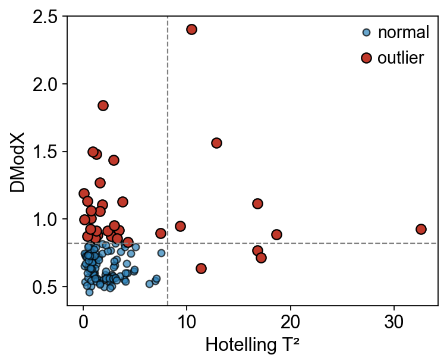
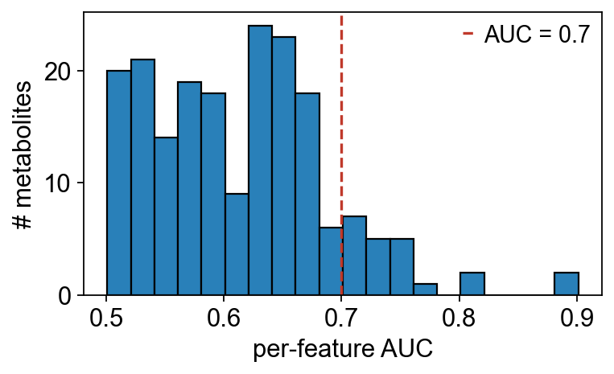

Real-data case study — MTBLS1 (urine NMR, Type 2 Diabetes)#
The earlier notebooks use cachexia, synthetic drift data, or
purpose-built factorial layouts. This one runs the full ov.metabol
stack on a public, real-world dataset straight from the
Metabolights repository: MTBLS1,
a 600 MHz ¹H-NMR urine metabolomics study of Type 2 Diabetes
(Salek et al., Physiol. Genomics 2007).
132 samples — 84 T2D, 48 controls
189 metabolite features (~30 % named, rest are chemical-shift peaks)
No pooled-QC samples, no injection-order metadata → forces us to fall back on the non-QC code paths (
cv_filter(across='all'))Pre-curated peak table in the study’s MAF file
Goals: (1) end-to-end workflow on data we did not generate; (2) show which tools apply and which don’t; (3) exercise every metabol plotting helper.
Workflow:
download the study
build an AnnData
QC & PCA-based sample outliers
missing-value pattern
intensity distribution (raw vs PQN-normalised)
impute / normalise / log+Pareto
two-group differential + volcano
PLS-DA, OPLS-DA, S-plot, VIP bar
MSEA ORA + pathway bar
ASCA (group × gender) + variance-explained bar
biomarker: per-feature ROC + nested-CV panel + fold ROC
DGCA + class-count bar + per-condition correlation network
summary
0 — Setup and dataset download#
The whole ISA-Tab layout (sample sheet + assay sheet + MAF file) is
fetched in one line with ov.utils.load_metabolights, which
caches files under cache_dir and returns a samples × metabolites
AnnData. group_col="Factor Value[Metabolic syndrome]" renames the
T2D vs control factor to the canonical adata.obs['group'] so every
downstream function works out of the box.
import numpy as np
import pandas as pd
import matplotlib.pyplot as plt
import omicverse as ov
ov.plot_set()
print('omicverse', ov.__version__)
🔬 Starting plot initialization...
🧬 Detecting GPU devices…
✅ NVIDIA CUDA GPUs detected: 1
• [CUDA 0] NVIDIA H100 80GB HBM3
Memory: 79.1 GB | Compute: 9.0
____ _ _ __
/ __ \____ ___ (_)___| | / /__ _____________
/ / / / __ `__ \/ / ___/ | / / _ \/ ___/ ___/ _ \
/ /_/ / / / / / / / /__ | |/ / __/ / (__ ) __/
\____/_/ /_/ /_/_/\___/ |___/\___/_/ /____/\___/
🔖 Version: 2.1.2rc1 📚 Tutorials: https://omicverse.readthedocs.io/
✅ plot_set complete.
omicverse 2.1.2rc1
adata = ov.utils.load_metabolights(
'MTBLS1',
group_col='Factor Value[Metabolic syndrome]',
cache_dir='mtbls1_demo',
)
print(adata)
print('group counts:', adata.obs['group'].value_counts().to_dict())
AnnData object with n_obs × n_vars = 132 × 220
obs: 'Source Name', 'Characteristics[Organism]', 'Term Source REF', 'Term Accession Number', 'Characteristics[Organism part]', 'Term Source REF.1', 'Term Accession Number.1', 'Characteristics[Variant]', 'Term Source REF.2', 'Term Accession Number.2', 'Characteristics[Sample type]', 'Term Source REF.3', 'Term Accession Number.3', 'Protocol REF', 'Factor Value[Gender]', 'Term Source REF.4', 'Term Accession Number.4', 'group', 'Term Source REF.5', 'Term Accession Number.5'
var: 'metabolite_identification', 'chemical_formula', 'smiles'
uns: 'metabolights'
group counts: {'Control Group': 84, 'diabetes mellitus': 48}
1 — Exploratory look#
Before any cleaning, peek at the raw layout and gender breakdown so later per-step numbers are interpretable.
fig, axes = plt.subplots(1, 2, figsize=(8, 3.2))
adata.obs['group'].value_counts().plot.bar(ax=axes[0], color=['#c0392b', '#2980b9'], edgecolor='k')
axes[0].set_title('Diagnosis')
axes[0].set_ylabel('# samples')
axes[0].tick_params(axis='x', rotation=0)
pd.crosstab(adata.obs['group'], adata.obs['Factor Value[Gender]']).plot.bar(
stacked=True, ax=axes[1], color=['#34495e', '#e67e22'], edgecolor='k')
axes[1].set_title('Diagnosis × Gender')
axes[1].legend(title='Gender', frameon=False)
axes[1].tick_params(axis='x', rotation=0)
fig.tight_layout(); plt.show()
{kind=link}
2 — Sample-level outlier detection (Hotelling T² + DModX)#
sample_qc fits a PCA on the raw matrix, computes Hotelling’s
T² (distance inside the PC-subspace) and DModX (distance to
the residual plane), and flags samples that fall above either
critical value at α = 0.95. sample_qc_plot renders the scatter +
threshold lines in a single call.
qc = ov.metabol.sample_qc(adata, n_components=3, alpha=0.95)
print(f'flagged: {qc["is_outlier"].sum()} / {len(qc)}')
ov.metabol.sample_qc_plot(qc)
plt.show()
flagged: 35 / 132
{kind=link}

3 — Missing-value pattern#
Before imputation, check where the NaNs sit. For a well-designed study the missing cells should be roughly uniform across samples — if one sample has 10× the NaN count of the others it probably needs dropping.
X = np.asarray(adata.X)
miss_per_sample = np.isnan(X).mean(axis=1)
miss_per_feature = np.isnan(X).mean(axis=0)
print(f'overall missingness: {np.isnan(X).mean():.1%}')
print(f'features with >10% NaN: {(miss_per_feature > 0.1).sum()}')
overall missingness: 0.0%
features with >10% NaN: 0
fig, axes = plt.subplots(1, 2, figsize=(9, 3.2))
axes[0].hist(miss_per_sample, bins=20, color='#2980b9', edgecolor='k')
axes[0].set_xlabel('fraction missing per sample'); axes[0].set_ylabel('# samples')
axes[1].hist(miss_per_feature, bins=20, color='#27ae60', edgecolor='k')
axes[1].set_xlabel('fraction missing per feature'); axes[1].set_ylabel('# features')
fig.tight_layout(); plt.show()
{kind=link}
4 — Feature filter (cv_filter across=’all’) + preprocessing#
cv_filter(across='all') is the v0.5 addition for QC-less studies:
compute the CV across every sample (instead of pooled QC) and
drop the noisiest features. Then impute with QRILC, normalise
with PQN, log-transform, and Pareto-scale.
adata_cv = ov.metabol.cv_filter(adata, across='all', cv_threshold=1.5)
adata_imp = ov.metabol.impute(adata_cv, method='qrilc', seed=0)
adata_norm = ov.metabol.normalize(adata_imp, method='pqn')
adata_log = ov.metabol.transform(adata_norm, method='log')
adata_pareto = ov.metabol.transform(adata_log, method='pareto', stash_raw=False)
print(f'features kept by cv_filter: {adata_cv.n_vars}/{adata.n_vars}')
print(f'NaN after QRILC: {np.isnan(np.asarray(adata_imp.X)).sum()}')
print(f'Pareto max |column mean|: {np.abs(np.asarray(adata_pareto.X).mean(axis=0)).max():.2e}')
features kept by cv_filter: 194/220
NaN after QRILC: 0
Pareto max |column mean|: 3.32e-15
4a — Raw vs PQN-normalised intensity#
A quick box-strip of per-sample median intensities before and after PQN — after normalisation all samples should sit at roughly the same level (the PQN assumption).
raw_med = np.log10(np.nanmedian(np.asarray(adata_imp.X), axis=1) + 1)
norm_med = np.log10(np.nanmedian(np.asarray(adata_norm.X), axis=1) + 1)
fig, ax = plt.subplots(figsize=(5.5, 3.2))
ax.boxplot([raw_med, norm_med], labels=['raw (imputed)', 'PQN-normalised'])
ax.set_ylabel('log10(median sample intensity + 1)')
fig.tight_layout(); plt.show()
{kind=link}
5 — Two-group differential analysis (Welch’s t)#
PQN + log is the MetaboAnalyst canonical pipeline; we ran it above.
differential on the log-transformed AnnData gives per-feature
Welch’s t, p-values, BH-FDR, and log2-fold changes.
deg = ov.metabol.differential(
adata_log,
group_col='group',
group_a='diabetes mellitus',
group_b='Control Group',
method='welch_t',
log_transformed=True,
)
print(f'{(deg["padj"] < 0.05).sum()}/{len(deg)} features padj<0.05')
78/194 features padj<0.05
top = deg.sort_values('pvalue').head(8).copy()
top['name'] = adata_cv.var.loc[top.index, 'metabolite_identification'].values
top[['name', 'stat', 'pvalue', 'padj', 'log2fc']]
name stat pvalue padj \
m59 isoleucine -9.291729 4.663572e-16 4.523665e-14
m60 N-acetylglutamate -9.291729 4.663572e-16 4.523665e-14
m145 unknown_shift_[6.47 .. 6.52] -5.816492 4.601095e-08 2.975375e-06
m195 unknown_m_8.335 5.716259 7.284739e-08 3.533098e-06
m117 n-methylnicotinamide -5.551948 1.527003e-07 5.924770e-06
m31 ethanol 5.318509 1.895120e-06 5.252190e-05
m30 2-oxoisovalerate 5.318509 1.895120e-06 5.252190e-05
m184 unknown_shift_[7.81 .. 7.87] -5.022566 2.651056e-06 6.428810e-05
log2fc
m59 -0.133335
m60 -0.133335
m145 -0.030824
m195 0.043695
m117 -0.223048
m31 0.092268
m30 0.092268
m184 -0.498991
Volcano plot#
ov.metabol.volcano(deg, padj_thresh=0.05, log2fc_thresh=0.5, label_top_n=8)
plt.show()
{kind=link}
6 — Multivariate discrimination#
PLS-DA + OPLS-DA with leave-one-out Q² on the Pareto-scaled
matrix. OPLS-DA adds the orthogonal-noise split that makes loadings
interpretable; feed its result into s_plot (predictive-covariance
vs correlation) and vip_bar for the Top-VIP ranking.
pls = ov.metabol.plsda(
adata_pareto, group_col='group',
group_a='diabetes mellitus', group_b='Control Group',
n_components=2,
)
opls = ov.metabol.opls_da(
adata_pareto, group_col='group',
group_a='diabetes mellitus', group_b='Control Group',
n_ortho=1,
)
print(f'PLS-DA R²X={pls.r2x:.3f} R²Y={pls.r2y:.3f} Q²={pls.q2:.3f}')
print(f'OPLS-DA R²X={opls.r2x:.3f} R²Y={opls.r2y:.3f} Q²={opls.q2:.3f}')
PLS-DA R²X=0.253 R²Y=0.669 Q²=0.566
OPLS-DA R²X=0.106 R²Y=0.669 Q²=0.566
OPLS-DA scores, S-plot, and VIP bar#
fig, ax = plt.subplots(figsize=(5, 4))
for lbl, c in [('diabetes mellitus', '#c0392b'), ('Control Group', '#2980b9')]:
mask = (adata_pareto.obs['group'] == lbl).to_numpy()
ax.scatter(opls.scores[mask, 0], opls.x_ortho_scores[mask, 0], c=c, s=25,
edgecolor='k', label=lbl)
ax.axvline(0, color='grey', lw=0.6); ax.axhline(0, color='grey', lw=0.6)
ax.set_xlabel('t[1] (predictive)'); ax.set_ylabel('t_o[1] (orthogonal)')
ax.legend(frameon=False); fig.tight_layout(); plt.show()
{kind=link}
ov.metabol.s_plot(opls, adata_pareto, label_top_n=8)
plt.show()
{kind=link}
# Use human-readable metabolite names on the VIP bars
mb_names = adata_pareto.var['metabolite_identification'].values
ov.metabol.vip_bar(opls, mb_names, top_n=15)
plt.show()
{kind=link}
7 — Pathway enrichment (MSEA ORA)#
MSEA resolves metabolite names → KEGG IDs. Passing mass_db= (v0.5
addition) makes the ChEBI table available as an in-memory lookup —
names present there skip PubChem entirely. Combined with the
cache-on-404 fix in fetch_hmdb_from_name, a warm cache run is
about 100× faster than the cold one.
mass_db = ov.metabol.fetch_chebi_compounds()
hits = deg[deg['padj'] < 0.05].sort_values('padj').head(30).index.tolist()
hit_names = adata_cv.var.loc[hits, 'metabolite_identification'].tolist()
bg_names = adata_cv.var['metabolite_identification'].dropna().tolist()
enr = ov.metabol.msea_ora(hit_names, bg_names, mass_db=mass_db)
print(f'{len(enr)} pathways tested, {(enr["padj"] < 0.05).sum()} padj<0.05')
enr.sort_values('padj').head(5)[['pathway', 'overlap', 'set_size', 'odds_ratio', 'padj']]
18 pathways tested, 0 padj<0.05
pathway overlap set_size odds_ratio \
0 2-Oxocarboxylic acid metabolism 3 5 6.857143
1 Biosynthesis of amino acids 3 5 6.857143
2 ABC transporters 2 3 8.250000
3 Valine, leucine and isoleucine biosynthesis 2 3 8.250000
4 Valine, leucine and isoleucine degradation 2 4 4.000000
padj
0 0.560631
1 0.560631
2 0.560631
3 0.560631
4 0.658375
ov.metabol.pathway_bar(enr, top_n=10)
plt.show()
{kind=link}
8 — Multi-factor decomposition (ASCA)#
ASCA decomposes the centred data into per-factor effect matrices plus interactions plus residual. On MTBLS1 we have group (T2D vs control) and gender — and ASCA quantifies how much variance each explains globally.
asca = ov.metabol.asca(
adata_pareto,
factors=['group', 'Factor Value[Gender]'],
include_interactions=True,
n_permutations=100,
seed=0,
)
asca.summary().round(4)
effect ss df variance_explained p_value
0 group 204.6645 1.0 0.0670 0.0099
1 Factor Value[Gender] 235.3499 1.0 0.0770 0.0099
2 group:Factor Value[Gender] 56.1278 1.0 0.0184 0.0198
3 residual 2602.8727 NaN 0.8519 NaN
ov.metabol.asca_variance_bar(asca)
plt.show()
{kind=link}
9 — Biomarker discovery: per-feature ROC + nested-CV panel#
roc_feature gives polarity-invariant per-feature AUC.
biomarker_panel runs a multivariate nested CV (5-outer × 3-inner
L2 logistic regression here) on the top-10 features with a 100-
permutation null.
auc = ov.metabol.roc_feature(
adata_log, group_col='group',
pos_group='diabetes mellitus', neg_group='Control Group',
)
top_auc = auc.head(10).copy()
top_auc['name'] = adata_cv.var.loc[top_auc.index, 'metabolite_identification'].values
top_auc[['name', 'auc']]
name auc
m60 N-acetylglutamate 0.901166
m59 isoleucine 0.901166
m30 2-oxoisovalerate 0.815972
m31 ethanol 0.815972
m184 unknown_shift_[7.81 .. 7.87] 0.766369
m117 n-methylnicotinamide 0.758681
m176 hippurate 0.758185
m178 hippurate 0.757192
m103 unknown_shift_[3.96 .. 4.00] 0.748760
m127 unknown_shift_[5.33 .. 5.36] 0.743056
fig, ax = plt.subplots(figsize=(5, 3.2))
ax.hist(auc['auc'], bins=20, color='#2980b9', edgecolor='k')
ax.axvline(0.7, color='#c0392b', ls='--', label='AUC = 0.7')
ax.set_xlabel('per-feature AUC'); ax.set_ylabel('# metabolites')
ax.legend(frameon=False); fig.tight_layout(); plt.show()
print(f'{(auc["auc"] >= 0.7).sum()} metabolites with AUC ≥ 0.7')
{kind=link}

22 metabolites with AUC ≥ 0.7
panel = ov.metabol.biomarker_panel(
adata_log, group_col='group',
pos_group='diabetes mellitus', neg_group='Control Group',
features=10, classifier='lr',
cv_outer=5, cv_inner=3, n_permutations=100, seed=0,
)
print(f'nested CV AUC: {panel.mean_auc:.3f} ± {panel.std_auc:.3f}')
print(f'permutation p-value: {panel.permutation_pvalue:.3f}')
nested CV AUC: 0.946 ± 0.037
permutation p-value: 0.010
from sklearn.metrics import roc_curve, auc as _auc
fpr, tpr, _ = roc_curve(panel.outer_labels, panel.outer_predictions)
fig, ax = plt.subplots(figsize=(4.5, 4.5))
ax.plot(fpr, tpr, color='#c0392b', lw=2, label=f'nested CV AUC = {_auc(fpr, tpr):.3f}')
ax.plot([0, 1], [0, 1], ls='--', color='grey')
ax.set_xlabel('FPR'); ax.set_ylabel('TPR'); ax.set_aspect('equal')
ax.legend(loc='lower right'); fig.tight_layout(); plt.show()
{kind=link}
fig, ax = plt.subplots(figsize=(5, 3))
imp = panel.feature_importance
imp.index = adata_cv.var.loc[imp.index, 'metabolite_identification'].values
imp.iloc[::-1].plot.barh(ax=ax, color='#27ae60', edgecolor='k')
ax.set_xlabel('panel importance'); ax.set_ylabel('')
fig.tight_layout(); plt.show()
{kind=link}
10 — Differential correlation (DGCA) + static network#
DGCA classifies every metabolite-pair correlation as one of
+/+ -/- +/- -/+ +/0 0/+ -/0 0/- 0/0. The class-count bar shows
the overall rewiring landscape; the corr_network network plot on
the T2D condition reveals the backbone that survives the
|r| ≥ 0.5 filter.
dc = ov.metabol.dgca(
adata_log, group_col='group',
group_a='diabetes mellitus', group_b='Control Group',
method='spearman',
)
print(f'{len(dc)} pairs, {(dc["padj"] < 0.05).sum()} padj<0.05')
dc.sort_values('padj').head(5)[['feature_a', 'feature_b', 'r_a', 'r_b', 'z_diff', 'padj']]
18721 pairs, 2887 padj<0.05
feature_a feature_b r_a r_b z_diff padj
0 m149 m150 1.000000 0.999656 40.478362 0.000000
1 m148 m218 -0.212657 0.749357 -6.386681 0.000002
8 m51 m59 -0.029744 0.784732 -5.848193 0.000006
10 m68 m198 0.207013 -0.709142 5.892204 0.000006
14 m148 m210 -0.111919 0.762155 -5.990206 0.000006
ov.metabol.dgca_class_bar(dc)
plt.show()
{kind=link}
edges_t2d = ov.metabol.corr_network(
adata_log,
group_col='group', group='diabetes mellitus',
method='spearman',
abs_r_threshold=0.5, padj_threshold=0.05,
)
print(f'{len(edges_t2d)} edges in T2D network (|r|≥0.5, padj<0.05)')
740 edges in T2D network (|r|≥0.5, padj<0.05)
named = adata_cv.var['metabolite_identification'].to_dict()
edges_plot = edges_t2d.copy()
edges_plot['feature_a'] = edges_plot['feature_a'].map(named).fillna(edges_plot['feature_a'])
edges_plot['feature_b'] = edges_plot['feature_b'].map(named).fillna(edges_plot['feature_b'])
top = edges_plot.head(40)
ov.metabol.corr_network_plot(top, figsize=(7, 6), label_font_size=6)
plt.show()
{kind=link}
11 — Pipeline summary#
Step |
Status on MTBLS1 |
Plot shown |
|---|---|---|
|
✓ |
— |
exploratory bar chart |
✓ |
1 (group × gender) |
|
✓ |
— |
|
✓ |
1 (T² vs DModX) |
missing-value histograms |
✓ |
1 (two panels) |
raw vs PQN box |
✓ |
1 |
|
✓ |
— |
|
✓ |
1 (volcano) |
|
✓ |
3 |
|
✓ |
1 |
|
✓ |
1 |
|
✓ |
1 |
|
✓ |
2 |
|
✓ |
1 |
|
✓ |
1 |
|
✗ (no QC pool) |
— |
|
✗ (cross-sectional) |
— |
|
✗ (mono-omic) |
— |
~15 plots across the pipeline. Every plot cell uses one
visualization helper from ov.metabol.* (or a 3-line matplotlib
snippet for the one-off summaries) so each cell stays under five
callable references.